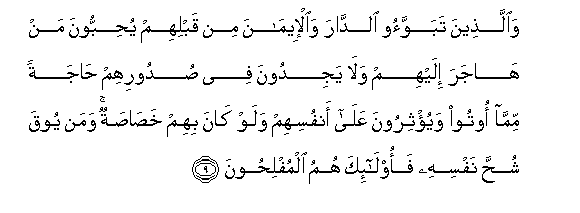
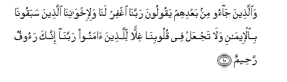

Sacred Texts Islam Index
Hypertext Qur'an Unicode Palmer Pickthall Yusuf Ali English Rodwell
Sūra LIX.: Ḥa<u>sh</u>r, or The Gathering Index
Previous Next

The Holy Quran, tr. by Yusuf Ali, [1934], at sacred-texts.com
Sūra LIX.: Ḥashr, or The Gathering
Section 1
1. Sabbaha lillahi ma fee alssamawati wama fee al-ardi wahuwa alAAazeezu alhakeemu
1. Whatever is
In the heavens and
On earth, let it declare
The Praises and Glory
Of God: for He is
The Exalted in Might,
The Wise.
2. Huwa allathee akhraja allatheena kafaroo min ahli alkitabi min diyarihim li-awwali alhashri ma thanantum an yakhrujoo wathannoo annahum maniAAatuhum husoonuhum mina Allahi faatahumu Allahu min haythu lam yahtasiboo waqathafa fee quloobihimu alrruAAba yukhriboona buyootahum bi-aydeehim waaydee almu/mineena faiAAtabiroo ya olee al-absari
2. It is He Who got out
The Unbelievers among
The People of the Book
From their homes
At the first gathering
(Of the forces).
Little did ye think
That they would get out:
And they thought
That their fortresses
Would defend them from God!
But the (Wrath of) God
Came to them from quarters
From which they little
Expected (it), and cast
Terror into their hearts,
So that they destroyed
Their dwellings by their own
Hands and the hands
Of the Believers.
Take warning, then,
O ye with eyes (to see)!
3. Walawla an kataba Allahu AAalayhimu aljalaa laAAaththabahum fee alddunya walahum fee al-akhirati AAathabu alnnari
3. And had it not been
That God had decreed
Banishment for them,
He would certainly have
Punished them in this world:
And in the Hereafter
They shall (certainly) have
The Punishment of the Fire.
4. Thalika bi-annahum shaqqoo Allaha warasoolahu waman yushaqqi Allaha fa-inna Allaha shadeedu alAAiqabi
4. That is because they
Resisted God and His Apostle:
And if any one resists God,
Verily God is severe
In Punishment.
5. Ma qataAAtum min leenatin aw taraktumooha qa-imatan AAala osooliha fabi-ithni Allahi waliyukhziya alfasiqeena
5. Whether ye cut down
(O ye Muslims!)
The tender palm-trees,
Or ye left them standing
On their roots, it was
By leave of God, and
In order that He might
Cover with shame
The rebellious transgressors.
6. Wama afaa Allahu AAala rasoolihi minhum fama awjaftum AAalayhi min khaylin wala rikabin walakinna Allaha yusallitu rusulahu AAala man yashao waAllahu AAala kulli shay-in qadeerun
6. What God has bestowed
On His Apostle (and taken
Away) from them—for this
Ye made no expedition
With either cavalry or camelry:
But God gives power
To His apostles over
Any He pleases: and God
Has power over all things.
7. Ma afaa Allahu AAala rasoolihi min ahli alqura falillahi walilrrasooli walithee alqurba waalyatama waalmasakeeni waibni alssabeeli kay la yakoona doolatan bayna al-aghniya-i minkum wama atakumu alrrasoolu fakhuthoohu wama nahakum AAanhu faintahoo waittaqoo Allaha inna Allaha shadeedu alAAiqabi
7. What God has bestowed
On His Apostle (and taken
Away) from the people
Of the townships,—belongs
To God,—to His Apostle
And to kindred and orphans,
The needy and the wayfarer;
In order that it may not
(Merely) make a circuit
Between the wealthy among you.
So take what the Apostle
Assigns to you, and deny
Yourselves that which he
Withholds from you.
And fear God; for God
Is strict in Punishment.
8. Lilfuqara-i almuhajireena allatheena okhrijoo min diyarihim waamwalihim yabtaghoona fadlan mina Allahi waridwanan wayansuroona Allaha warasoolahu ola-ika humu alssadiqoona
8. (Some part is due)
To the indigent Muhājirs,
Those who were expelled
From their homes and their property,
While seeking Grace from God
And (His) Good Pleasure,
And aiding God and His Apostle:
Such are indeed
The sincere ones;—

9. Waallatheena tabawwaoo alddara waal-eemana min qablihim yuhibboona man hajara ilayhim wala yajidoona fee sudoorihim hajatan mimma ootoo wayu/thiroona AAala anfusihim walaw kana bihim khasasatun waman yooqa shuhha nafsihi faola-ika humu almuflihoona
9. But those who
Before them, had homes
(In Medina)
And had adopted the Faith,—
Show their affection to such
As came to them for refuge,
And entertain no desire
In their hearts for things
Given to the (latter),
But give them preference
Over themselves, even though
Poverty was their (own lot).
And those saved from
The covetousness of their own
Souls,—they are the ones
That achieve prosperity.

10. Waallatheena jaoo min baAAdihim yaqooloona rabbana ighfir lana wali-ikhwanina allatheena sabaqoona bial-eemani wala tajAAal fee quloobina ghillan lillatheena amanoo rabbana innaka raoofun raheemun
10. And those who came
After them say: "Our Lord!
Forgive us, and our brethren
Who came before us
Into the Faith,
And leave not,
In our hearts,
Rancour (or sense of injury)
Against those who have believed.
Our Lord! Thou art
Indeed Full of Kindness,
Most Merciful."